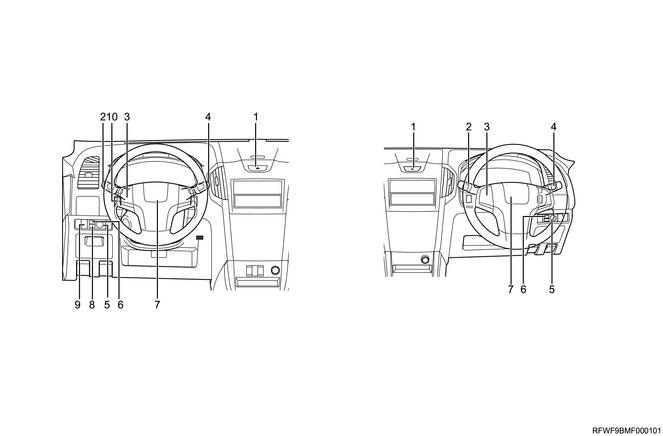
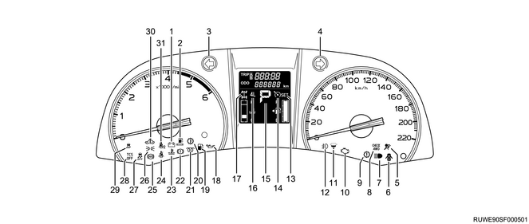
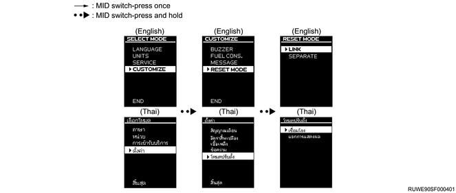

Function, structure, operation of body, cab, accessories (All models)
1. Function, structure, operation of body, cab, accessories
Note
- Headlight system
This circuit comprises the headlights, the ignition switch, the lighting switch and the passing switch on the combination switch, the high beam indicator light, and relays.
When the lighting switch is turned ON in the headlight position, the headlight relay will be activated and the headlights will be illuminated. When the headlights are illuminated, the optical axis of the headlight can be faced upward and downward alternately using the lighting switch. The passing switch is not related to the position of the headlight switch. The optical axis will face upward only when the switch lever is being pulled up.
Note
- Clearance light system
This circuit comprises the clearance lights, the ignition switch, the lighting switch on the combination switch, and relays. When the lighting switch is turned ON in the headlight or the taillight position, the taillight relay will be activated and the clearance lights will be illuminated.
Note
- Fog light system
This circuit comprises the fog lights, the ignition switch, the lighting switch and the fog light switch on the combination switch, and relays. When the lighting switch is turned ON in the headlight or taillight position, the taillight relay will be activated. While keeping this state, when the fog light switch is turned ON, the fog light relay will be activated and the fog lights will be illuminated.
Note
- Turn signal light and hazard light system
This circuit comprises the turn signal lights, the ignition switch, the turn signal switch on the combination switch, the flasher unit, the hazard warning flasher switch, etc. When the turn signal switch or the hazard warning flasher switch is turned ON, the flasher unit will be activated and the turn signal lights will be illuminated. The turn signal lights are also illuminated by the answer-back function of the keyless entry system, etc.
Note
- Dome light system
This circuit comprises the dome light, the door switches, the BCM, etc. When the door switch is ON, the BCM will illuminate the dome light.
Note
- Taillight and stoplight system
This circuit comprises the taillights, the stoplights, the ignition switch, the lighting switch on the combination switch, the stoplight switch, and relays. When the lighting switch is turned ON in the headlight or taillight position, the taillight relay will be activated and the taillights will be illuminated. The stoplights illuminate according to the operation of the stoplight switch.
Note
- License plate light system
This circuit comprises the license plate light(s), the ignition switch, the lighting switch on the combination switch, and relays. When the lighting switch is turned ON in the headlight or taillight position, the taillight relay will be activated and the license plate light(s) will be illuminated.
Note
- Illumination light system
This circuit comprises the illumination lights, the ignition switch, the lighting switch on the combination switch, and relays. When the lighting switch is turned ON in the headlight or the taillight position, the taillight relay will be activated and the illumination lights will be illuminated.
Note
- Backup light system
This circuit comprises the backup lights and the backup light switch. When the backup light switch installed to the transmission is turned ON, the backup lights will illuminate.
Note
- Power window system
This circuit is comprised of the ignition switch as well as the power window switch and the power window motor for each window. When the ignition switch is turned ON, battery voltage is applied to each power window switch through the fuse and the power window relay in the circuit. This enables the up or down selection of each switch to toggle the rotational direction of the power window motor, which opens or closes the window. The switch on the driver side has a built-in one touch circuit, which automatically moves the window up or down when operating the switch to the auto position.
When the battery or the power window switch harness connector has been reconnected, perform the following initialization settings in order to operate the driver's power window properly.
Open the driver's window halfway. Pull up the driver's window switch to fully close the driver's window and then keep the switch in this position for 2 seconds.
Note
- Windshield wiper and washer system
The wiper and washer system comprise the following units. The system is activated when the vehicle is running or the ignition switch is in the ON position.
･ Wiper/Washer switch
･ Intermittent relay
･ Wiper motor
･ Washer motor
･ Washer nozzle
･ Washer tank
･ Wiper arm and blade
The intermittent relay controls the low speed operation of the wiper motor. The washer motor and the high speed operation are controlled directly by the wiper and washer switch. The intermittent relay detects the operation signal of the wiper and washer switch.
Windshield washer
When the windshield washer switch is turned ON, voltage will be supplied to the washer motor. The intermittent relay monitors this circuit voltage in order to detect the wiper interlinking request signal. Shortly after it detects the signal, it activates the wiper main relay and drives the wiper motor at low speed.
Wiper intermittent drive
This drives the wiper intermittently at low speed. When the wiper switch is in the "INT" position, the intermittent relay activates the wiper main relay only for a fixed time with a fixed interval and drives the wiper motor at low speed.
Wiper low speed drive
When the wiper switch is in the "LO" position, the wiper main relay is activated to drive the wiper motor at low speed.
The low speed drive can be tested with the wiper output of the actuator test in a scan tool.
Wiper high speed drive
When the wiper switch is in the "HI" position, the wiper main relay and the wiper high low relay are activated to drive the wiper motor at high speed.
Note
- Windshield wiper and washer system components
- Wiper arm RH
- Washer nozzle RH
- Washer nozzle LH
- Wiper arm LH
- Washer hose
- Washer tank
- Washer motor
- Link rod LH
- Wiper motor
- Link rod RH
Note
- Layout of switches
Models without PESS

- Hazard warning flasher switch
- Wiper and washer switch
- Volume control switch (Volume switch, Seek switch, Mode switch, Phone switch)
- Combination light control
- Remote control mirror switch (Angle adjustment switch)
- Remote control mirror switch (Left/right selector switch)
- Horn switch
- Retractable power mirror switch
- Illumination control switch
- ESC OFF switch
Models with PESS
- Hazard warning flasher switch
- MID illumination control switch
- Wiper and washer switch
- Volume control switch (Volume switch, Seek switch, Mode switch, Phone switch)
- Combination light control
- MID switch
- Remote control mirror switch (Angle adjustment switch)
- Remote control mirror switch (Left/right selector switch)
- Horn switch
- Engine start/stop button
- ESC OFF switch
- Cruise control switch
- Rear cooler switch
- Retractable power mirror switch
Note
- Instrument panel cluster system
The following meters, gauges, warning lights, and indicator lights are assembled to the instrument panel cluster.
･ Speedometer
･ Tachometer
･ Fuel gauge
･ Engine coolant temperature gauge
･ Odometer, trip meter
･ Shift indicator
･ Multi-information display
These components cannot be replaced separately because they are integrated with the instrument panel cluster.
They communicate with control units such as the ECM, the TCM, the BCM, and the EHCU via CAN.
Note
- Speedometer
The speedometer indicates vehicle speed based on signals output from the ECM. The ECM corrects vehicle speed signals from the EHCU and sends them to the meter by way of CAN communication.
Note
- Tachometer
The tachometer displays the engine speed based on the engine speed signal outputted from the ECM. The ECM detects the signal from the CKP sensor, and the engine speed signal is inputted to the instrument panel cluster via CAN communication.
Note
- Fuel gauge
The fuel gauge displays the remaining fuel level based on the signal outputted from the fuel tank unit. The fuel gauge displays the remaining fuel level as low when the resistance detected by the fuel tank unit is high.
The fuel gauge displays the remaining fuel level as high when the resistance detected by the fuel tank unit is low.
Note
- Engine coolant temperature gauge
The engine coolant temperature gauge displays the engine coolant temperature based on the engine coolant temperature signal outputted from the ECM. The ECM detects the engine coolant temperature signal from the engine coolant temperature sensor, and the signal is inputted to the engine coolant temperature gauge through CAN communication.
Note
- Odometer, trip meter (Model without MID)
Note
- Odometer, trip meter (Model with MID)
The odometer and trip meter calculate and display the mileage based on the vehicle speed signal output from the ECM. Switch the display using the select/reset knob operation.
Note
- Warning light, indicator light (Model without MID)

- Generator warning light
- Fuel filter warning light
- Turn signal indicator light - left
- Turn signal indicator light - right
- SRS airbag warning light
- Door open warning light
- High beam indicator light
- Check 4WD warning light
- Check trans warning light
- Check engine warning light
- Water separator warning light
- Front fog light indicator light
- Cruise control set indicator light
- Cruise control main indicator light
- Shift indicator
- 4WD low indicator light
- 4WD indicator light
- Engine oil pressure warning light
- Low fuel warning light
- Automatic transmission fluid temperature warning light
- Glow plug indicator light
- Brake system/parking brake warning light
- Engine overheat warning light
- Seat belt warning light - driver seat
- ABS warning light
- Light position indicator light
- ESC OFF indicator light
- TCS OFF indicator light
- TCS/ESC warning light
- SVS indicator light
- Seat belt warning light - passenger seat
Note
- Warning light, indicator light (Model with MID)
- Generator warning light
- Fuel filter warning light
- Turn signal indicator light – left
- Turn signal indicator light – right
- SRS airbag warning light
- Door open warning light
- High beam indicator light
- Check 4WD warning light
- Check trans warning light
- Check engine warning light
- Water separator warning light
- Front fog light indicator light
- Cruise control set indicator light
- Cruise control main indicator light
- Shift indicator
- 4WD low indicator light
- 4WD indicator light
- Engine oil pressure warning light
- Low fuel warning light
- Automatic transmission fluid temperature warning
- Glow plug indicator light
- Brake system/parking brake warning light
- Engine overheat warning light
- Seat belt warning light - driver seat
- ABS warning light
- Light position indicator light
- ESC OFF indicator light
- TCS OFF indicator light
- TCS/ESC warning light
- SVS indicator light
- Seat belt warning light - passenger seat
- Multi-information display (MID)
- Icy road warning light
- PESS warning light
Note
- Multi information display
The multi-information display has the ability to display information, warning lights, indicator lights, and maintenance information.

Information display
Odometer
Trip meter
Shift indicator
Out side temperature
4WD indicator (4H)
4WD indicator (4L)
Fuel gauge
Coolant temperature gauge
INST.
Instantaneous fuel economy numerical display
INST.
Instantaneous fuel economy graphical display
AVG.
Average fuel economy DISTANCE Section distance
AVG. SPEED
Driving Distance and Average Vehicle Speed
RANGE
Distance where it can run
ELAPSE TIME
Parking brake release warning light
Light control off warning light
Key remain warning light
Select mode
Note
- Multi-information display operation procedures
Note
- Service reminder display items and setting
1. Engine oil
The setting distance can be set between 5,000 km - 10,000 km (3,107 miles - 6,214 miles) in increments of 1,000 km (621 miles).
When the driving distance is subtracted from the set distance and the remaining distance is 1,000 km (621 miles), the reminder screen is displayed.
2. Air cleaner element
The setting distance can be set between 20,000 km - 40,000 km (12,428 miles - 24,856 miles) in increments of 5,000 km (3,107 miles).
When the driving distance is subtracted from the set distance and the remaining distance is 1,000 km (621 miles), the reminder screen is displayed.
3. User preference settings
The setting distance can be set between 5,000 km - 20,000 km (3,107 miles - 12,428 miles) in increments of 1,000 km (621 miles).
When the driving distance is subtracted from the set distance and the remaining distance is 1,000 km (621 miles), the reminder screen is displayed.
After selecting a distance by pressing the MID switch once, press and hold the MID switch to set the distance.
After the distance is set, a reduction depending on the distance traveled is displayed.
When an arrow is displayed at the bottom of the setting screen, it indicates that there is a next setting screen.
The reminder screen is displayed only for 3 seconds whenever the ignition switch is turned ON.
The reminder screen is displayed every 200 km (124 miles) between 1000 km (621 miles) and 0 km (0 miles) remaining.
If the MID switch is pressed once while the reminder screen is being displayed, the reminder screen "OFF" screen is displayed and the reminder screen is not displayed after that.

With "RESET MODE", the resetting method can be changed for "fuel economy (average fuel economy)", "driving distance and average vehicle speed", and "elapse time".
Select "LINK" and then in one of the fuel economy (average fuel economy), driving distance and average vehicle speed, and elapse time screens, press and hold the MID switch. The fuel economy (average fuel economy), driving distance and average vehicle speed, and elapse time will all be reset simultaneously.
To reset a value only for the screen that is currently displayed, select "SEPARATE" and then in one of the fuel economy (average fuel economy), driving distance and average vehicle speed, and elapse time screens, press and hold the MID switch.

To return to the maintenance display, reset the distance on the maintenance setting screen.
Even when the battery is removed, the set value is retained and continues.
The factory default is for this function to be disabled.
The reduction distance from the set distance is displayed up to the set distance as a negative value.
Note
- Bulb location diagram
- Turn signal light (outside rearview mirror type)
- Turn signal light
- Front fog lamp
- Headlight/clearance light
- Turn signal light (front door type)
- High mounted stoplight
- Taillight and stoplight
- Rear turn signal light
- License plate light
- Backup light
- Taillight
Note
- Position to install the reverse switch

- Reverse switch
Note
- Instrument panel cluster system circuit diagram
Without MID
With MID
Connector Face